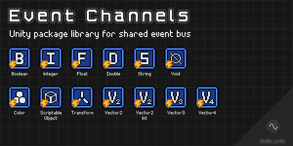

Overview

Unity package library for sending and receiving events between components and across multiple scenes.
Heavily inspired by the infamous Unite 2017: Game Architecture with Scriptable Objects presentation by Ryan Hipple (GitHub).
Unfortunately Unity does not understand generics in the Editor and Inspectors, so only concrete types can be used. Fortunately, this can be made easy by deriving from a single generic type allowing the same common behaviors.
NOTE: This package is still in development and may have breaking changes in future versions until a stable v1.0.0 release is made.
Changelog
All notable changes to this library will be documented in this file.
The format is based on Keep a Changelog, and this project adheres to Semantic Versioning.
[0.4.2] - 2022-12-28
Added
ScriptableObjectEventChannelvariantScriptableObjectEventListenercomponent- Icons for event channels in the Editor
- Icons for event listeners in the Editor
[0.4.1] - 2022-12-08
Fixed
- Missing meta files
[0.4.0] - 2022-12-04
Added
ColorEventChannelvariantColorEventListenercomponentVector2IntEventChannelvariantVector2IntEventListenercomponentVector2EventChannelvariantVector2EventListenercomponentVector3EventChannelvariantVector3EventListenercomponentVector4EventChannelvariantVector4EventListenercomponent
[0.3.1] - 2022-12-04
Added
- Docs via
mdbookinDocumentation~directory - GitHub CI/CD workflows for documentation
Changed
- Exposed
Channelgetter property onEventListenercomponent
[0.3.0] - 2022-12-01
Added
EventChannelEditor- custom editorEventListenerEditor<TChannel>- abstract base classVoidEventListenerEditor- custom editorRaiseEvent(int)method forDoubleEventChannelRaiseEvent(float)method forDoubleEventChannelRaiseEvent(int)method forFloatEventChannelRaiseEvent(bool)method forStringEventChannelRaiseEvent(int)method forStringEventChannelRaiseEvent(float)method forStringEventChannelRaiseEvent(double)method forStringEventChannelRaiseEvent(int)method forDoubleEventListenerRaiseEvent(float)method forDoubleEventListenerRaiseEvent(int)method forFloatEventListenerRaiseEvent(bool)method forStringEventListenerRaiseEvent(int)method forStringEventListenerRaiseEvent(float)method forStringEventListenerRaiseEvent(double)method forStringEventListener
Fixed
- Small fixes in Listeners sample scene
[0.2.0] - 2022-12-01
Added
EventListener<TChannel>abstract base classEventListener<T, TChannel>abstract base classBoolEventListenercomponentDoubleEventListenercomponentFloatEventListenercomponentIntEventListenercomponentStringEventListenercomponentTransformEventListenercomponentVoidEventListenercomponent- Listeners sample scene
Fixed
- Root namespace should now be
UnderLogic.Channels
[0.1.0] - 2022-12-01
Added
EventChannelabstract base classEventChannel<T>abstract base classBoolEventChannelvariantDoubleEventChannelvariantFloatEventChannelvariantIntEventChannelvariantStringEventChannelvariantTransformEventChannelvariantVoidEventChannelvariant- Channels sample scene
Installation
OpenUPM
OpenUPM is an open source Unity package registry that allows you to easily install thousands of packages.
You can install this library with the following CLI command:
$ openupm add com.underlogic.event-channels
Git URL
Starting with Unity 2019.3 you can add packages via git url.
You can add this package by the following url: https://github.com/UnderLogic/event-channels
Using this method will allow you to update the package through the Unity Package Manager.
Local Package
Alternatively, you can clone the git repository and add the package locally.
Getting Started
Context
To best understand the purpose of this library and the problems it solves, it is highly recommended to watch the Unite 2017: Game Architecture with Scriptable Objects by Ryan Hipple.
Use Cases
Event Bus
The common case of needing to notify various components of events within an application, potentially across multiple scenes. Includes the ability to chain events to cascade logic and triggers in sequence. Easy to drag and drop references in the Editor and view/modify them in the Inspector during play mode.
Decoupling
The common case of having multiple observers of a single event being able to react independently of each other. For example, playing a sound while also showing a game over screen when the player dies. This helps enforce the single responsibility principle as well as reduce tight coupling between types.
Event-Based Architecture
The case of only wanting to update or perform actions when necessary (reactively) instead of wastefully computing each frame. This is very common in UI-heavy applications.
See runtime-variables library in the related-libraries section for working with observable variables
and runtime-collections library in the related-libraries section for working with observable collections.
Samples
The Samples~ folder contains sample scenes showcasing various aspects of the library in action.
It is recommended to import and play around with them in Unity to get a feel for how to use the library.
Custom Events
While this library provides many of the common Unity types you will use, you may want to extend this library with your own custom events specific to your application. Fortunately, this is rather easy and typically only involves creating a derived class from one of the base classes. You may also add any additional helper properties and methods as you need.
Channels
- Create a new class that derives from
EventChannel<T>, whereTshould be the type of event data. - Ensure the new type is marked with the
CreateAssetMenuattribute, so you can create instances in the Editor. - Create any instances of the new event channel in your
Assetsfolder. - Now you can use them throughout your application.
NOTE: If you want a custom VoidEventChannel, derive from that class instead of the EventChannel base class.
This will ensure you also get the custom editor for manually invoking the event.
Listeners
- Create a new class that derives from
EventListener<T, TChannel>whereTshould be the underlying type andTChannelis the event channel type. - Now you can use the event listener in your components
NOTE: If you want a custom VoidEventListener, derive from that class instead of the EventListener<TChannel> base class.
This will ensure you also get the custom editor for manually invoking the event.
Related Libraries


Channels
Overview
Event channels are implemented as ScriptableObject instances that can be raise events between components and across scenes.
They provide a UnityAction event when an event is raised.
Many of the event channels provide helper methods that make it easier to raise events from other components, including UnityEvent bindings.
This can be especially useful when using the Listener components.
EventChannel
Abstract base class that all other non-data event channels derive from.
Description
Represents an event channel that can raise events which do not contain any associated data.
Public Events
EventRaised : UnityAction- Invoked when an event is raised on the channel.
Public Methods
RaiseEvent()- Raises an event on the channel.
EventChannel<T>
Abstract base class that all other data event channels derive from.
Description
Represents an event channel that can raise events containing a value T.
Public Events
EventRaised : UnityAction<T>- Invoked when an event is raised on the channel.
Public Methods
RaiseEvent(T)- Raises an event on the channel with the valueTprovided.
BoolEventChannel
Derives from EventChannel<T>.
Description
Represents an event channel that can raise events containing a bool value.
This class does not have any additional members.
ColorEventChannel
Derives from EventChannel<T>.
Description
Represents an event channel that can raise events containing a Color value.
This class does not have any additional members.
DoubleEventChannel
Derives from EventChannel<T>.
Description
Represents an event channel that can raise events containing a double value.
Public Methods
RaiseEvent(int)- Raises an event on the channel with the signedintvalue provided.RaiseEvent(float)- Raises an event on the channel with thefloatvalue provided.
FloatEventChannel
Derives from EventChannel<T>.
Description
Represents an event channel that can raise events containing a float value.
Public Methods
RaiseEvent(int)- Raises an event on the channel with the signedintvalue provided.
IntEventChannel
Derives from EventChannel<T>.
Description
Represents an event channel that can raise events containing a int value.
This class does not have any additional members.
ScriptableObjectChannel
Derives from EventChannel<T>.
Description
Represents an event channel that can raise events containing a ScriptableObject value.
This class does not have any additional members.
StringEventChannel
Derives from EventChannel<T>.
Description
Represents an event channel that can raise events containing a string value.
Public Methods
RaiseEvent(bool)- Raises an event on the channel with the string representation of theboolvalue provided.RaiseEvent(int)- Raises an event on the channel with the string representation of the signedintvalue provided.RaiseEvent(float)- Raises an event on the channel with the string representation of thefloatvalue provided.RaiseEvent(double)- Raises an event on the channel with the string representation of thedoublevalue provided.
NOTE: The RaiseEvent() methods will format the string using the CultureInfo.CurrentCulture.
TransformEventChannel
Derives from EventChannel<T>.
Description
Represents an event channel that can raise events containing a Transform value.
This class does not have any additional members.
Vector2IntEventChannel
Derives from EventChannel<T>.
Description
Represents an event channel that can raise events containing a Vector2Int value.
This class does not have any additional members.
Vector2EventChannel
Derives from EventChannel<T>.
Description
Represents an event channel that can raise events containing a Vector2 value.
Public Methods
RaiseEvent(Vector2Int)- Raises an event on the channel with theVector2Intvalue provided.
Vector3EventChannel
Derives from EventChannel<T>.
Description
Represents an event channel that can raise events containing a Vector3 value.
Public Methods
RaiseEvent(Vector2Int)- Raises an event on the channel with theVector2Intvalue provided.RaiseEvent(Vector2)- Raises an event on the channel with theVector2value provided.
Vector4EventChannel
Derives from EventChannel<T>.
Description
Represents an event channel that can raise events containing a Vector4 value.
Public Methods
RaiseEvent(Vector2Int)- Raises an event on the channel with theVector2Intvalue provided.RaiseEvent(Vector2)- Raises an event on the channel with theVector2value provided.RaiseEvent(Vector3)- Raises an event on the channel with theVector3value provided.
VoidEventChannel
Derives from EventChannel.
Description
Represents an event channel that can raise events which do not contain any data (void).
This class does not have any additional members.
Editor
This event channel type has a custom editor which can be used to manually invoke the event in the Inspector.
Listeners
Event listeners are implemented as MonoBehaviour components that can be used to bind UnityEvent actions to events via the Unity Inspector.
This allows listeners to notify other components without needing to write extra boilerplate code for subscribing and unsubscribing to those event channels.
It also allows multiple actions to be triggered from a single event easily.
EventListener<TChannel>
Abstract base class that all other non-data event channel listeners derive from.
Description
Listens for events on a non-data event channel TChannel and invokes actions when an event is raised.
Serialized Fields (Inspector)
channel : TChannel- The channel to listen on for events.onEventRaised : UnityEvent- The actions to perform when an event is raised on the channel.
Public Properties
Channel : TChannel(get) - The channel being listened on for events.
Public Methods
RaiseEvent()- Manually raisesonEventRaisedon the component.
NOTE: Manually raising the event will only trigger the UnityEvent actions on this component.
It will not raise an event on the Channel itself.
EventListener<T, TChannel>
Abstract base class that all other data event channel listeners derive from.
Description
Listens for events on a event channel TChannel and invokes actions with T when an event is raised.
Serialized Fields (Inspector)
channel : TChannel- The channel to listen on for events.onEventRaised : UnityEvent<T>- The actions to perform when an event is raised on the channel.
Public Properties
Channel : TChannel(get) - The channel being listened on for events.
Public Methods
RaiseEvent(T)- Manually raisesonEventRaisedon the component with the valueTprovided.
NOTE: Manually raising the event will only trigger the UnityEvent actions on this component.
It will not raise an event on the Channel itself.
BoolEventListener
Derives from EventListener<T, TChannel>.
Description
Listens for events on a BoolEventChannel and invokes actions with a bool value when an event is raised.
This class does not have any additional members.
ColorEventListener
Derives from EventListener<T, TChannel>.
Description
Listens for events on a ColorEventChannel and invokes actions with a Color value when an event is raised.
This class does not have any additional members.
DoubleEventListener
Derives from EventListener<T, TChannel>.
Description
Listens for events on a DoubleEventChannel and invokes actions with a double value when an event is raised.
Public Methods
RaiseEvent(int)- Manually raisesonEventRaisedwith the signedintvalue provided.RaiseEvent(float)- Manually raisesonEventRaisedwith thefloatvalue provided.
NOTE: Manually raising the event will only trigger the UnityEvent actions on this component.
It will not raise an event on the Channel itself.
FloatEventListener
Derives from EventListener<T, TChannel>.
Description
Listens for events on a FloatEventChannel and invokes actions with a float value when an event is raised.
Public Methods
RaiseEvent(int)- Manually raisesonEventRaisedwith the signedintvalue provided.
NOTE: Manually raising the event will only trigger the UnityEvent actions on this component.
It will not raise an event on the Channel itself.
IntEventListener
Derives from EventListener<T, TChannel>.
Description
Listens for events on a IntEventChannel and invokes actions with a signed int value when an event is raised.
This class does not have any additional members.
ScriptableObjectEventListener
Derives from EventListener<T, TChannel>.
Description
Listens for events on a ScriptableObjectChannel and invokes actions with a ScriptableObject value when an event is raised.
This class does not have any additional members.
StringEventListener
Derives from EventListener<T, TChannel>.
Description
Listens for events on a StringEventChannel and invokes actions with a string value when an event is raised.
Public Methods
RaiseEvent(bool)- Manually raisesonEventRaisedwith the string representation of theboolvalue provided.RaiseEvent(int)- Manually raisesonEventRaisedwith the string representation of the signedintvalue provided.RaiseEvent(float)- Manually raisesonEventRaisedwith the string representation of thefloatvalue provided.RaiseEvent(double)- Manually raisesonEventRaisedwith the string representation of thedoublevalue provided.
NOTE: Manually raising the event will only trigger the UnityEvent actions on this component.
It will not raise an event on the Channel itself.
NOTE: The RaiseEvent() methods will format the string using the CultureInfo.CurrentCulture.
TransformEventListener
Derives from EventListener<T, TChannel>.
Description
Listens for events on a TransformEventChannel and invokes actions with a Transform value when an event is raised.
This class does not have any additional members.
Vector2IntEventListener
Derives from EventListener<T, TChannel>.
Description
Listens for events on a Vector2IntEventChannel and invokes actions with a Vector2Int value when an event is raised.
This class does not have any additional members.
Vector2EventListener
Derives from EventListener<T, TChannel>.
Description
Listens for events on a Vector2EventChannel and invokes actions with a Vector2 value when an event is raised.
Public Methods
RaiseEvent(Vector2Int)- Manually raisesonEventRaisedwith theVector2Intvalue provided.
NOTE: Manually raising the event will only trigger the UnityEvent actions on this component.
It will not raise an event on the Channel itself.
Vector3EventListener
Derives from EventListener<T, TChannel>.
Description
Listens for events on a Vector3EventChannel and invokes actions with a Vector3 value when an event is raised.
Public Methods
RaiseEvent(Vector2Int)- Manually raisesonEventRaisedwith theVector2Intvalue provided.RaiseEvent(Vector2)- Manually raisesonEventRaisedwith theVector2value provided.
NOTE: Manually raising the event will only trigger the UnityEvent actions on this component.
It will not raise an event on the Channel itself.
Vector4EventListener
Derives from EventListener<T, TChannel>.
Description
Listens for events on a Vector4EventChannel and invokes actions with a Vector4 value when an event is raised.
Public Methods
RaiseEvent(Vector2Int)- Manually raisesonEventRaisedwith theVector2Intvalue provided.RaiseEvent(Vector2)- Manually raisesonEventRaisedwith theVector2value provided.RaiseEvent(Vector3)- Manually raisesonEventRaisedwith theVector3value provided.
NOTE: Manually raising the event will only trigger the UnityEvent actions on this component.
It will not raise an event on the Channel itself.
VoidEventListener
Derives from EventListener<TChannel>.
Description
Listens for events on a VoidEventChannel and invokes actions when an event is raised.
This class does not have any additional members.
Editor
This event listener has a custom editor which can be used to manually invoke the event in the Inspector.